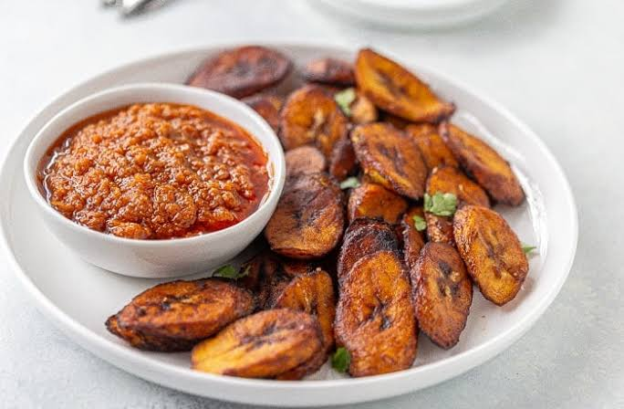

Sweet Golden Fried Plantains
Introduction to my Recipe
I will be making fried plantains. Fried plantains are one of the best
side dishes to serve alongside any meal. They're made with just a few ingredients
and are really simple to prepare. These golden-brown treats are very crispy on
the outside & sweet in the middle. I chose this recipe because fried
plantains are one of my favorite foods, they are easy to make, and they are popular
in many African, Caribbean, and Latin American countries.
Fried Plantain Recipe
Ingredients
- 2 ripe plantains with yellow skin and black spots
- 2-3 tablespoons of vegetable oil
- Optional: ½ teaspoon of salt
Instructions
- Peel the plantains by cutting off the ends, slicing the skin lengthwise, and removing it.
- Slice the plantains diagonally into thin or medium-sized pieces.
- Heat the oil to about 175°C over medium heat.
- Place the plantain slices into the hot oil.
-
Fry the plantains for about 2–3 minutes on each side until they
are golden-brown.
Don't forget to flip them so both sides cook evenly!
- Remove the fried plantains from the pan and place them on a paper towel to absorb the excess oil.
-
Sprinkle a little salt over the plantains if desired.
-
Serve the plantains while they are warm and enjoy!
Optional: Add a pinch of salt to give the plantains
a sweet and salty flavour.
